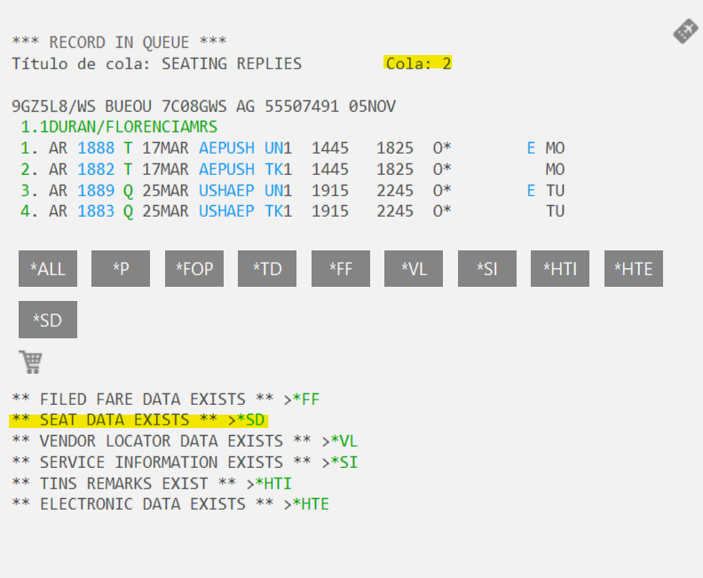
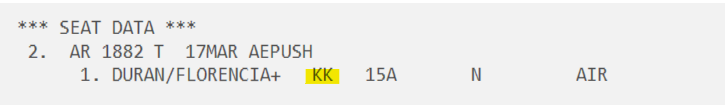

Cuando se produce un cambio o cancelación en un vuelo o bien la compañía aérea nos realiza alguna notificación sobre un PNR, estas reservas entrarán por colas y deberemos gestionarlas.
¿Cómo accedemos al sistema de colas?
QCA Para ver las colas y solo aparecen las que tienen alguna reserva dentro.
QPB* Aquí vemos todas las colas que tenemos y los nombres de cada uno, aquí aparecen todas las colas aunque no tengan ninguna reserva dentro.
Q/número de cola Para entrar a una cola. Si utilizamos Smartpoint clickamos encima de la cola que vayamos a revisar.
QR Para eliminar una reserva de la cola.
I Para salir de una reserva sin eliminarla de la cola.
QEB/número de cola Para pasar una reserva a otra cola.
QW Este comando nos muestra en que otras colas esta la reserva sobre la que estamos parados.
QXI Para salir del sistema de colas.
Son aquellas reservas que tiene reserva de asiento.
Vemos que se ha creado el campo SD donde podemos comprobar los números de asiento

Debemos entrar al campo SD y verificar el estado de los asientos. Nos lo podemos encontrar en KK (confirmado) o en HX/UN (cancelado)

Si están en KK, como en el ejemplo, los tendremos que pasar a HK.
Dos maneras de hacerlo:
Son actualizaciones que se han realizado con la compañía aérea, es decir, si se han tomado nuevos lugares, o si la compañía aérea reubicó en el mismo aeropuerto (que a veces saltan las plazas en KK)
En estos casos hay que revisar el estado del PNR, si lo vemos todo en HK y comprobar en el HTE es decir, en los billetes si el itinerario es el mismo. Una vez revisado solo hay que quitarlo de cola con QR.
Si hay algún trayecto en TK/KK, habrá que actualizar el pedido con @ALL, revisar si hay algún VR de la cia que hayan reubicado a pax o hecho algún cambio y revisar en la Admin que el itinerario esté actualizado, si no lo está actualizado lo pasamos a la Q/61, y si lo está lo quitamos de colas QR.
Hay que revisar si el billete está emitido. Si tenemos el campo HTE, el billete está emitido, por tanto, lo quitaremos de colas con la transacción QR.
Si no hay HTE significa que el billete todavía no está emitido, por lo que buscaremos el pedido en Admin para ver en qué estado se encuentra. Hay que buscar con el estado “Cualquiera” y el“No finalizado” .
Si está pendiente de emisión lo único que haremos es poner una nota NP.PDTE DE EMISIÓN y lo dejaremos en la cola hasta que el billete esté emitido.
Si el estado es No Finalizado, No dispo, entonces eliminaremos los lugares en GDS con XI, pondremos nota NP.NO FINALIZADO y luego quitaremos de colas con QR.
También nos podemos encontrar que ya no hay itinerario y tampoco hay HTE, entonces nos fijamos si hay notas en el PNR, porque es posible que algún compañero ya lo haya gestionado porque ha entrado por otra cola:
Si no hay ninguna nota en GDS, revisaremos en Admin en qué estado se encuentra el pedido, y en función del estado lo tramitaremos según hemos comentado anteriormente.
Aquí nos llegarán los VR, notas que cada compañía aérea haya indicado en un PNR.
Nos podemos encontrar con distintas notificaciones, algunas con gestión necesaria y otras solamente informativas.
Entramos en la cola Q/16 y veremos que las reservas tienen el campo VR.
Aquí la compañía aérea nos lo notifica con un VR:
Nos podemos encontrar que el billete no está emitido y la compañía aérea cancela la plaza, en estos casos la reserva entrará en dos colas la 16 y la 23.
Revisamos en la Admin en qué estado se encuentra, si es una Emisión pasaremos nota a la persona que lo tiene asignado para que haga la gestión que toque.
Si el estado en la Admin es no finalizado, no dispo, abandonado… cancelamos las plazas, ponemos nota en GDS y hacemos QR.
En este caso revisaremos si la reserva está en la cola 23 haciendo QW. Si está en la 23 hacemos QR y si no la movemos a la 23 haciendo QEB/23. Lo gestionará quién tenga de tarea la cola 23.
NOTA: En el caso de no saber qué es lo que pone en el VR llamaremos a la compañía aérea para que nos lo expliquen.
La compañía aérea nos envía un VR solicitando que se indique un SSR con el mail y teléfono de contacto de pax:
En este caso nos piden que pongamos un SR con los datos del cliente, por tanto revisaremos en la Admin el mail y número de teléfono del cliente y lo añadiremos en Galileo de la siguiente manera:
Indicar mail: SI.P1/SSRCTCEBAHK1/LAURA.KONKOL//ATRAPALO.COM
Indicar número de teléfono: SI.P1/SSRCTCMBAHK1/933197570/ES
Nos podemos encontrar con algunos VR que indican lo siguiente:
Es decir, están indicando que si el cliente tiene FQTV lo indiquemos mediante un SR, en estos casos no haremos nada, directamente lo quitaremos de colas QR, ya que durante el proceso de compra ya facilitamos la opción de que los clientes indiquen la tarjeta de viajero frecuente en caso de disponer de ella, por tanto si no consta en la reserva es que el cliente no tiene.